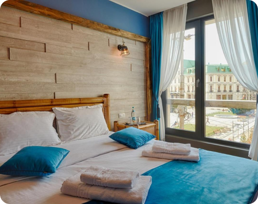
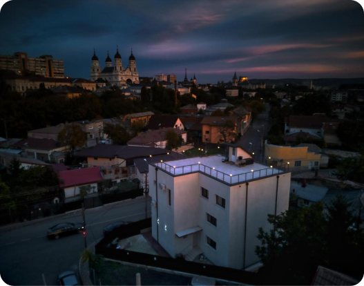

Piata Unirii Central Apartaments
Piata Unirii Central Apartments se află în Iași, aproape de Opera Națională Română Iași, Catedrala Mitropolitană din Iași și Teatrul Național Vasile Alecsandri.
Rating

Amada City Center
Amada City Center oferă cazare cu WiFi gratuit și parcare privată gratuită, în Iași, în apropiere de Catedrala Mitropolitană și Opera Națională Română din Iași.
Rating